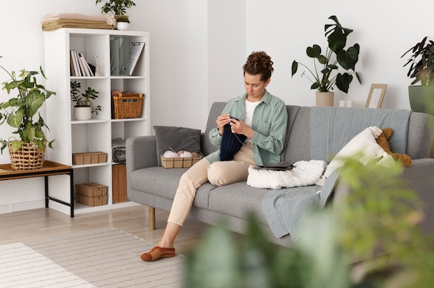

A home should support the way you live while giving you room to pause and recharge. Creating that balance means looking beyond individual furniture choices: layout, lighting, storage, colour and materials all shape how a space feels and functions.
Oakline Studio can help bring these elements together in a considered interior design plan. The starting point is understanding how each room is used, what already works and what needs to change. A living room used for relaxing, working and entertaining, for example, may benefit from clearly defined zones without being divided into separate, disconnected areas.

Before choosing finishes or accessories, consider how people move through the room. Keep routes between doors and frequently used areas clear, and arrange seating to suit conversation as well as everyday comfort. In smaller rooms, furniture with a lighter visual profile or more than one use can help preserve a sense of openness.
The right layout depends on the home and its occupants. A thoughtful plan makes practical use of the available space rather than relying on a one-size-fits-all arrangement.
Calm interiors do not have to be plain. A restrained palette can provide continuity, while contrast in texture adds warmth and depth. Natural-looking finishes, soft fabrics and carefully chosen accents can make a room feel welcoming without making it visually busy.
It helps to consider colours and materials together. A paint shade may appear different depending on the room’s light, nearby surfaces and time of day. Reviewing samples in the space before making a final decision can reduce uncertainty and help create a more cohesive result.
Clutter can make even a spacious room feel unsettled. Storage works best when it reflects daily habits: books, devices, toys or household essentials should have practical places to go. Closed cupboards can keep visual noise to a minimum, while open shelving can display a small, edited selection of objects.
Storage should also be easy to use. If everyday items are difficult to reach or put away, the room is less likely to stay organised. The aim is not to hide everything, but to make the balance between display and concealed storage feel intentional.
A single overhead light rarely meets every need. Combining general lighting with task and accent lighting makes a room more adaptable. A reading spot may need a focused lamp, while softer light can help create a more relaxed atmosphere in the evening.
Think about how natural light enters the room, too. Window treatments should suit the need for privacy and light control while fitting the wider design. In homes across England, where rooms and daylight conditions vary, lighting choices are best made in response to the specific space rather than following a fixed formula.
A functional interior is shaped by small decisions as well as major ones. Consider whether there is a convenient place to set down a bag, whether seating is comfortable for its intended use and whether surfaces can be maintained with ease. Durable, suitable materials can help a room remain practical as routines change.
Working with Oakline Studio offers an opportunity to consider these decisions as part of a joined-up design process. By connecting the room’s layout, finishes and furnishings to the people who use it, the result can feel both composed and personal.
A calm living space is not defined by a particular style or a lack of belongings. It comes from a home that feels clear, comfortable and easy to live in—where each choice has a purpose and the overall design supports everyday routines.
Please review the privacy information before submitting your details. This notice is a general prompt and does not describe specific data practices or replace a complete privacy policy. Read the Privacy Policy